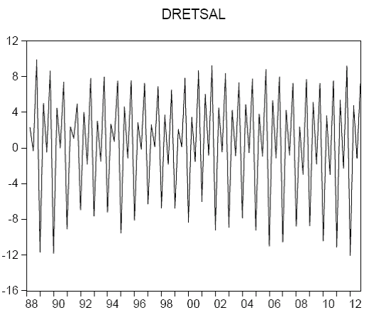

Stock returns share a set of empirical stylised facts: little autocorrelation, heavy tails, gain-loss asymmetry and volatility clustering. These features mean the normal distribution is only a starting point, and motivate heavy-tailed distributions and volatility models such as GARCH.
How to read these notes
These notes follow the opening lecture of a financial econometrics course on the distribution and properties of stock returns. They assume basic probability — random variables, densities, expectations and variances — and build toward the modelling choices that occupy the rest of the subject. The natural follow-ups are maximum likelihood, which fits these distributions, and GARCH, which captures their volatility dynamics.
1. Defining returns
Financial econometrics works with returns rather than prices, because returns are scale-free and closer to stationary. Let \(P_t\) be the price of a stock at time \(t\). There are two standard definitions:
Simple return: \(R_t = (P_t - P_{t-1})/P_{t-1}\), the proportional change in price.
Log return: \(r_t = \log(P_t/P_{t-1})\), the change in log price.
Log returns are usually preferred in practice. They add up cleanly over time — the log return over \(k\) periods is just the sum of the one-period log returns — and for small returns they are almost identical to simple returns. More general definitions account for dividends and continuous compounding, but the one-period simple and log returns are the workhorses.
2. What return data actually look like
The first thing a financial econometrics course does is plot real return series and their empirical densities — for example weekly returns on the S&P market, gold, or the Apple and IBM stocks. Two visual features recur across almost every series.

A return series. Note how large moves cluster together: turbulent periods are followed by turbulent periods, calm by calm.First, the series fluctuate around a level close to zero with no obvious trend or predictable pattern. Second, the size of the fluctuations is not constant: there are visibly calm stretches and visibly turbulent stretches. These two observations are the seeds of the formal stylised facts below.
3. The empirical stylised facts of returns
Across assets, markets and time periods, returns display a remarkably consistent set of empirical regularities. These stylised facts are the target that any good model of returns must reproduce.
| Stylised fact | What it means |
|---|---|
| Little/no autocorrelation | Returns are close to unpredictable from their own past; the autocorrelation of \(r_t\) is small. |
| Heavy tails | Extreme returns happen far more often than a normal distribution predicts. |
| Gain/loss asymmetry | The distribution is often skewed; large losses can be more likely than large gains of the same size. |
| Aggregational normality | Returns look more normal as the horizon lengthens (monthly returns are closer to normal than daily). |
| Volatility clustering | Large moves tend to be followed by large moves of either sign; volatility is persistent. |
| Slow decay in absolute returns | While returns themselves are barely autocorrelated, \(|r_t|\) and \(r_t^2\) are strongly and persistently autocorrelated. |
The last two facts are the crucial ones for modelling. Returns are nearly unpredictable in their level, but highly predictable in their magnitude. That combination — an unforecastable mean but a forecastable variance — is exactly what volatility models are built to capture.
4. Describing the distribution: the four moments
To make the stylised facts precise we summarise the distribution with its moments. For any function \(g(\cdot)\), the population moment is \(E[g(X)]=\int g(x)f_X(x)\,dx\). The first two moments give location and spread:
The third and fourth standardised moments capture the shape that makes returns distinctive:
Skewness measures asymmetry: negative skew means a longer left tail (large losses), which is common for equities. Kurtosis measures tail heaviness: the normal distribution has kurtosis 3, and returns typically have excess kurtosis (kurtosis above 3), the formal statement of heavy tails.
So the stylised facts translate directly into moment statements: heavy tails are high kurtosis, gain/loss asymmetry is non-zero skewness. Computing the sample mean, variance, skewness and kurtosis is therefore the first diagnostic step on any return series, and a standard exam exercise is to do exactly this on a short series of weekly returns and infer the distributional shape.
5. Why the normal distribution is only a starting point
The normal (Gaussian) distribution is the natural first model: it is fully described by just its mean and variance, has a clean bell shape, and underpins much of classical statistics.
 The normal distribution has kurtosis 3 and zero skewness. Real returns generally have more mass in the tails and some asymmetry.
The normal distribution has kurtosis 3 and zero skewness. Real returns generally have more mass in the tails and some asymmetry.But the stylised facts show the normal is a poor literal description of returns. Empirical return distributions have heavier tails (excess kurtosis) and are frequently skewed, so the normal understates the probability of extreme moves — precisely the events that matter most for risk management. Two responses run through the rest of a financial econometrics course:
- Heavier-tailed distributions. Replace the normal with a distribution that allows fat tails, such as the Student-\(t\), fitted by maximum likelihood.
- Time-varying volatility. Let the variance change over time to capture volatility clustering. This is the role of ARCH and GARCH models, which produce heavy unconditional tails even from normal shocks.
6. Why the distribution matters
Getting the distribution of returns right is not an academic nicety. Value-at-Risk and other risk measures depend directly on the tails of the return distribution, so assuming normality when the tails are heavy systematically understates risk. Option pricing depends on the whole distribution of future returns. And the near-absence of autocorrelation in returns is the empirical core of the efficient markets hypothesis — the claim that returns are hard to predict from their own past. Each of these themes begins from the simple stylised facts described in these notes.
Financial econometrics tuition
These notes support students taking financial econometrics and quantitative finance modules. For 1-1 help with returns, the stylised facts, distributional modelling or empirical projects in Stata/EViews/R, see financial econometrics tuition or finance tuition.
Companion videos: the @economaths channel and its Time Series playlist cover the time-series tools behind return modelling.